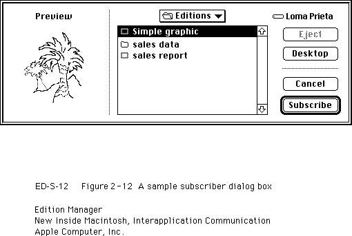

Creating a Subscriber
You need to create a Subscribe To menu command in the Edit menu. When a user chooses Subscribe To from this menu, your application should display the subscriber dialog box on the user's screen.Use the
NewSubscriberDialogfunction to display the subscriber dialog box on the user's screen. This function is similar to theCustomGetFileprocedure described in the chapter "Standard File Package" in Inside Macintosh: Files.To create a subscriber, you must get information from the user, such as the name of the edition being subscribed to. The dialog box displays a listing of all available editions and allows the user to see a preview (thumbnail sketch) of the edition selected. Figure 2-12 shows a sample subscriber dialog box.
Figure 2-12 A sample subscriber dialog box

The subscriber dialog box allows the user to choose an edition to subscribe to. The
NewSubscriberDialogfunction handles all user interaction until a user clicks Subscribe or Cancel. When a user selects an edition container, the Edition Manager accesses the preview for the edition container (if it is available) and displays it.You pass a new subscriber reply record as a parameter to the
NewSubscriberDialogfunction.TYPE NewSubscriberReply = RECORD canceled: Boolean; {user clicked Cancel} formatsMask:SignedByte; {formats required} container: EditionContainerSpec;{initially, default } { name & location of edition } { to subscribe to; on return, } { edition name & location } { chosen by the user} END;Thecanceledfield returns a Boolean value ofTRUEif the user clicked Cancel. To indicate which edition format types (text, graphics, or sound) your application can read, you set theformatsMaskfield to one or more of these constants:CONST kPICTformatMask = 1; {can subscribe to 'PICT'} kTEXTformatMask = 2; {can subscribe to 'TEXT'} ksndFormatMask = 4; {can subscribe to 'snd '}To support a combination of formats, add the constants together. For example, aformatsMaskof 3 displays both graphics and text edition format types in the subscriber dialog box.The
containerfield is of data typeEditionContainerSpec. You must initialize thecontainerfield with the default edition volume reference number, directory ID, filename, and part. To do so, use theGetLastEditionContainerUsedfunction to obtain the name of the last edition displayed in the dialog box.err := GetLastEditionContainerUsed(container);This function returns the last edition container for which a new section was created using theNewSectionfunction. If there is no last edition, or if the edition was deleted,GetLastEditionContainerUsedstill returns the correct volume reference number and directory ID to use, but leaves the filename blank and returns thefnfErrresult code.The
containerfield is of data typeEditionContainerSpec.TYPE EditionContainerSpec = RECORD theFile: FSSpec; {file containing edition } { data} theFileScript: ScriptCode; {script code of filename} thePart: LongInt; {which part of file, } { always kPartsNotUsed} thePartName: Str31; {reserved} thePartScript: ScriptCode; {reserved} END;The fieldtheFileis of typeFSSpec. See Inside Macintosh: Files for further information on file system specification records.After filling in the fields of the new subscriber reply record, pass it as a parameter to the
NewSubscriberDialogfunction, which displays the subscriber dialog box.err := NewSubscriberDialog(reply);After displaying the subscriber dialog box, call theNewSectionfunction to create the section record and the alias record. See "Creating the Section Record and Alias Record" beginning on page 2-15 for detailed information.If the subscriber is set up to receive new editions automatically (not manually), the Edition Manager sends your application a Section Read event. Whenever your application receives a Section Read event, it should read the contents of the edition into the subscriber.
Listing 2-6 illustrates how to create a subscriber. As described earlier, you must set up and display the subscriber dialog box to allow the user to subscribe to any of the available editions. After your application creates a subscriber, your application receives a Section Read event to read in the data being subscribed to. Be sure to add the newly created section to your list of sections for this file. There are many different techniques for creating subscribers and unique IDs; this listing displays one technique.
Listing 2-6 Creating a subscriber
PROCEDURE DoNewSubscriber(thisDocument: MyDocumentInfoPtr); VAR getLastErr: OSErr; dialogErr: OSErr; sectionErr: OSErr; resID: Integer; thisSectionH: SectionHandle; reply: NewSubscriberReply; BEGIN {put default edition name into reply record} getLastErr := GetLastEditionContainerUsed(reply.container); {can subscribe to pictures or text} reply.formatsMask := kPICTformatMask + kTEXTformatMask; {display dialog box & let user select edition to subscribe to} dialogErr := NewSubscriberDialog(reply); IF dialogErr <> noErr THEN MyErrHandler(dialogErr); {handle error and exit} IF reply.canceled THEN EXIT(DoNewSubscriber); {do nothing if user canceled} {Advance counter to make a new unique sectionID for this } { document. It is not necessary to equate section IDs with } { resources.} thisDocument^.nextSectionID := thisDocument^.nextSectionID + 1; {create a subscriber section} sectionErr := NewSection(reply.container, thisDocument^.fileSpecPtr, stSubscriber, thisDocument^.nextSectionID, sumAutomatic, thisSectionH); IF sectionErr <> noErr THEN MyErrHandler(sectionErr);{handle error and exit} resID := thisDocument^.nextSectionID; {add this section/alias pair to app's internal bookkeeping} MyAddSectionAliasPair(thisDocument, thisSectionH, resID); {Remember that you will receive a Section Read event to read } { in the edition that you just subscribed to because the } { initial mode is set to sumAutomatic.} {Remember that the section and alias records need to be saved } { as resources when the user saves the document.} END;Opening an Edition Container to Read Data
Before reading data from an edition, you must use theOpenEditionfunction. Your application should only use this function for a subscriber. Use this function to initiate the reading of data from an edition.err := OpenEdition(subscriberSectionH, refNum);As a precaution, you should retain the old data until the user can no longer undo. This allows you to undo changes if the user requests it.Your application can supply a procedure such as
DoReadEditionto read in data from the edition to a subscriber. When your application opens a document containing a subscriber that is set up to receive new editions automatically, the Edition Manager sends you a Section Read event if the edition has been updated. The Section Read event supplies the handle to the section that requires updating. Listing 2-7, shown in the next section, provides an example of reading data from an edition.Choosing Which Edition Format to Read
After your application opens the edition container for a subscriber, it can look in the edition for formats that it understands. To accomplish this, use theEditionHasFormatfunction.err := EditionHasFormat(whichEdition, whichFormat, formatSize);TheEditionHasFormatfunction returns thenoTypeErrresult code if a requested format is not available. If the requested format is available, this function returns thenoErrresult code, and theformatSizeparameter contains the size of the data in the specified format orkFormatLengthUnknown(-1), which signifies that the size is unknown.After your application opens the edition container and determines which formats it wants to read, call the
- Note
- The Translation Manager (if it is available) attempts implicit translation under certain circumstances. For instance, it does so when your application attempts to read from an edition a format type that is not in the edition. In this case, the Translation Manager attempts to translate the data into the requested format. For more information, see the chapter "Translation Manager" in Inside Macintosh: More Macintosh Toolbox.

ReadEditionfunction to read in the edition data. See "Reading and Writing Edition Data" on page 2-27 for detailed information.After you have completed writing the edition data into the subscriber section, call the
CloseEditionfunction to close the edition. See "Closing an Edition" on page 2-28 for detailed information.Listing 2-7 illustrates how to read data from an edition. As described earlier, you must open the edition, determine which formats to read, use the
ReadEditionfunction to read in data, and then use theCloseEditionfunction to close the edition. This listing shows how to read only text.Listing 2-7 Reading in edition data
PROCEDURE DoReadEdition(theSubscriber: SectionHandle); VAR eRefNum: EditionRefNum; openErr: OSErr; readErr: OSErr; closeErr: OSErr; thisDocument: MyDocumentInfoPtr; textHandle: Handle; formatLen: Size; BEGIN {find out which document this section belongs to} thisDocument := MyFindDocument(theSubscriber); {open the edition for reading} openErr := OpenEdition(theSubscriber, eRefNum); IF openErr <> noErr THEN MyErrHandler(openErr); {handle error and exit} {look for 'TEXT' format} IF EditionHasFormat(eRefNum, 'TEXT', formatLen) = noErr THEN BEGIN {get the handle of location to read to} textHandle := MyGetTextInSection(theSubscriber, thisDocument); SetHandleSize(textHandle, formatLen); HLock(textHandle); readErr := ReadEdition(eRefNum, 'TEXT', textHandle^, formatLen); MyUpdateSubscriberText(theSubscriber, textHandle, readErr); HUnLock(textHandle); IF readErr = noErr THEN BEGIN {The read was successful; now close the edition. When } { successful = TRUE, the section data = edition data.} closeErr := CloseEdition(eRefNum, TRUE); EXIT(DoReadEdition); END; END; {of EditionHasFormat} {'TEXT' format wasn't found or read error; just close } { the edition. FALSE tells the Edition Manager that your } { application did not get the latest edition.} closeErr := CloseEdition(eRefNum, FALSE); END;